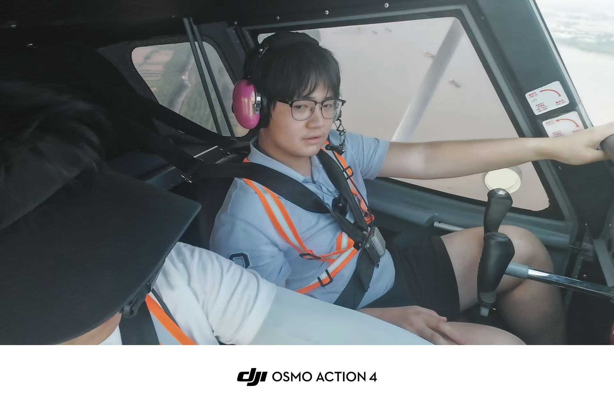
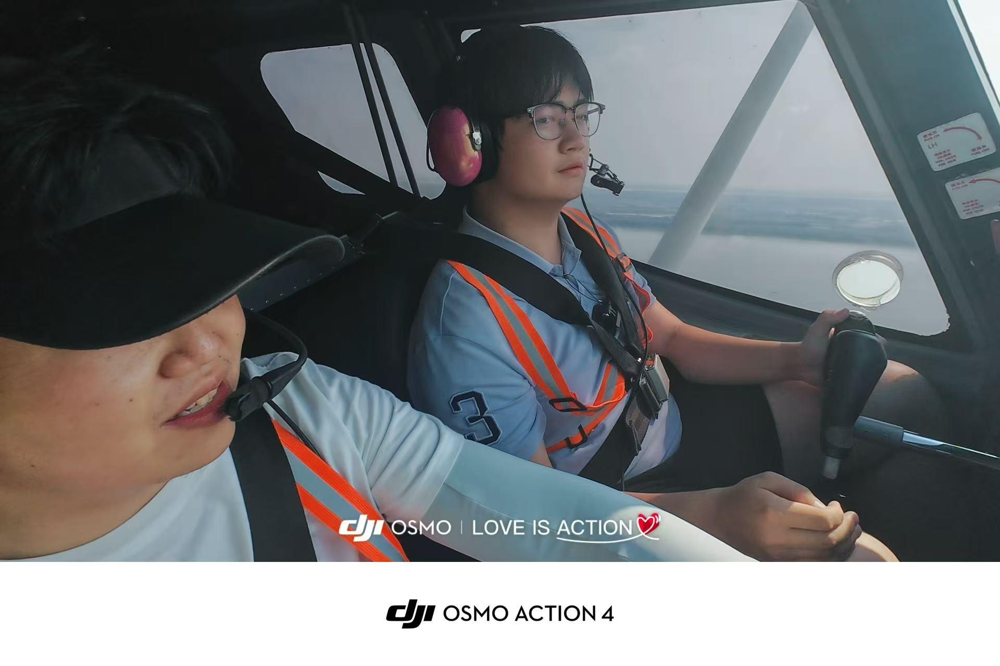
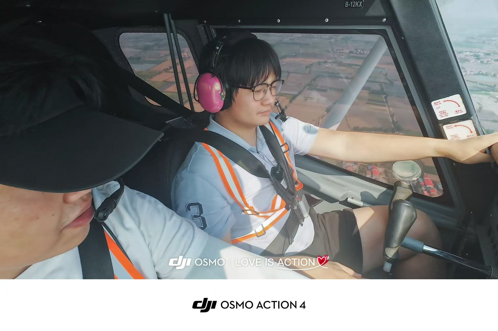
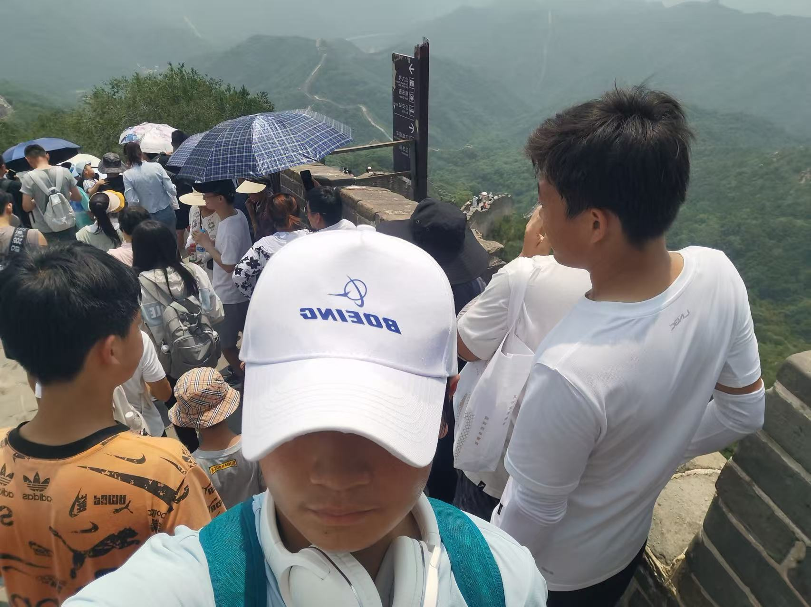
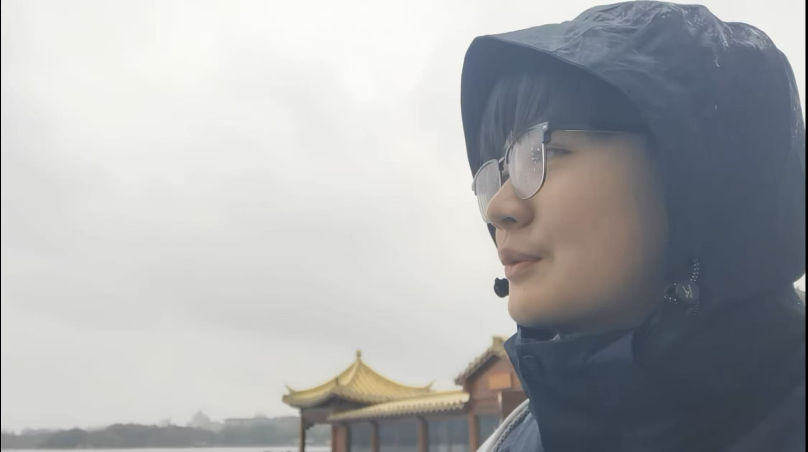
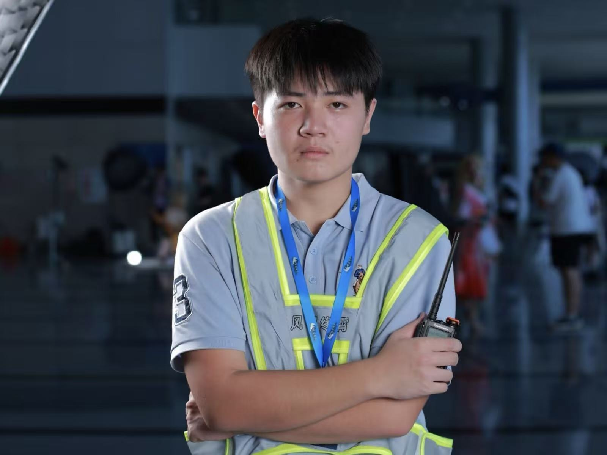

文章
2026.10.4
关于我为什么打算写这个博客呢？
其实是在澳门待久了一个人比较无聊，自己写点什么东西玩一玩。当然我也会在这里向大家分享一下我目前的开源项目
一来是我的成分过于复杂（说好听点是研究领域多种交叉），向他人自我介绍时难以用三言两语概括，所以索性做个博客网站。
二来，作为人工智能应用方面的学生，所接触到的肯定是多种且交叉的领域，有个联络平台也方便与大家合作。
当然，如果大家有什么想跟我合作的点子，或者说有什么问题想咨询，请翻阅网站底部联系邮箱，欢迎大家keep touch with me
2026
-
高中热爱并熟练掌握嵌入式开发的我，为什么大学却毅然的选择放弃这个专业？
很多人问过我这个问题，包括我自己也常常对此产生自我怀疑，那么在现在深夜杂谈，来聊一聊这件事
项目
-
风羽缘霄航空社官网
把风羽缘霄技术部的活抢走了说是
这个项目开发一个月左右了，目前正在我们社团内部服务器上线进行小范围上线实机测试 -
这个博客
在做一个 HTML 文件搞定，没有框架也没有依赖，改内容就是复制粘贴。
-
整理下载文件夹的小脚本
够用就不改了按类型和时间把文件归位，跑一遍就清静。写得不好看，但只要不坏就一直用。
-
[Ansys中客制化agent的接入]
暂停[通过调用agent对sim situation进行极限气动包线计算，不过由于目前主流大模型在复杂场景以及多量复合数据输入的情况下，输出质量有限。所以咕咕咕]





